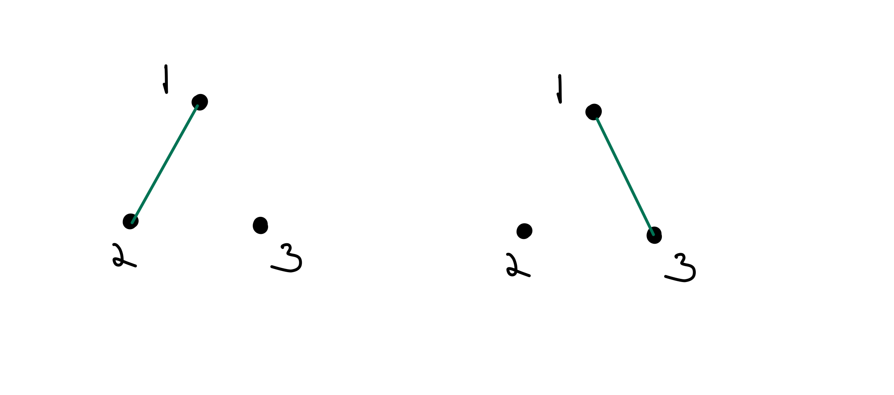

Define \(R\) on \(S \times S\) as \(aRb\) if and only if \(a\) and \(b\) are in the same subset in the partition \(P\text{.}\) Then verify that \(R\) is reflexive, symmetric, and transitive (and thus an equivalence relation).
\(R\) is reflexive because \(3\) divides \(0\text{.}\)\(R\) is symmetric because if \(3\) divides \(a-b\text{,}\) then \(3\) divides \(b-a = -(a-b)\text{.}\)\(R\) is transitive because if \(3\) divides \(a-b\) and \(b-c\text{,}\) then \(3\) divides \(a-c = (a-b)+(b-c)\text{.}\)
Let \(S\) be a set, and \(R\) the relation on \(P(S) \times P(S)\) given by \(A \sim_R B\) if and only if \(|A| = |B|\text{.}\) Is \(R\) an equivalence relation?
A graph is a set of vertices (or nodes) along with a set of edges between those vertices. For example, the following are two graphs with \(3\) vertices and \(1\) edge.

We’d like to consider two graphs equal if we can re-label the vertices of one graph to get the other. For example, this can be done with the two graphs shown above. Determine the equivalence classes for this equivalence relation on the set of all graphs with \(3\) vertices.